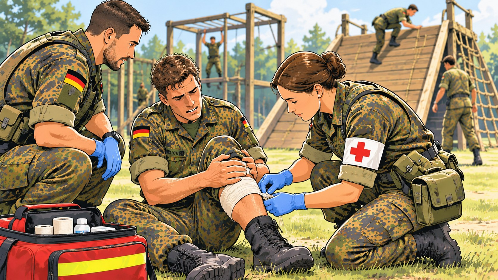

03 – Unfall bei der Sportausbildung

Nachrichtentext anzeigen
Bei der Sportausbildung in einer niedersächsischen Kaserne sind gestern zwei Soldaten verletzt worden. Einer der Soldaten stürzte auf der Hindernisbahn aus etwa zwei Metern Höhe. Ein weiterer Soldat verletzte sich am Knie. Beide wurden zunächst vom Sanitätspersonal vor Ort versorgt und anschließend in ein ziviles Krankenhaus gebracht. Nach Angaben der Bundeswehr sind die Verletzungen nicht lebensbedrohlich. Die Sportausbildung wurde vorübergehend unterbrochen. Die genaue Ursache des Unfalls wird derzeit untersucht.